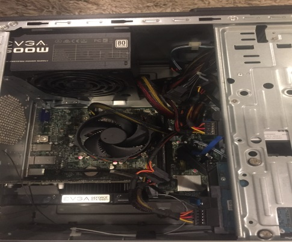

Xtreme Riderz (Scratch Partner Video Game)
August 2017-September 2017, Computer Science Principles
The objective was to create a functioning game that included multiple levels of difficulty. This included a main menu in order to allow the player to organize the way they played levels. I helped design the sprite animations and obstacle in the levels. I also helped code the user controls and an initial version of the jumping mechanism in the game. I learned that communication with my partner was key in order to finish the game by the deadline. We created goals for ourselves along the way based on what we were going to finish,which was an important factor in staying organized.
Prebuilt PC Upgrade
March 2017, Personal Project
My goal for this project was to successfully upgrade a pre-built computer by adding in a new power supply,graphics card, and SSD. As someone who had never built their own PC before, I did not have much experience in upgrading the components of computers. I helped fit in the graphics card into the motherboard, and connect all of the cables in order to connect the SSD to the motherboard. I had the help of my dad and a friend who had experience with building computers as we worked on this project. I also helped manage the cables in the PC in order to prevent loose cables from getting stuck in one of the fans.
Escape Adventure Game
March 2018, Computer Science Principles
Both my partner and I wanted to create a fully interactive text-based adventure game where the player's goal is to escape a facility after being kidnapped. We used Python to create this game in order to incorporate several different endings for the game which depend on the player's actions. We also needed to make sure that the player could not break the game by entering responses that are none of the available options in the prompts. We used else statements with conditions to account for any unintended responses that the user inputs.